Case study · Personal websites
Made to order.
Phone-first sites I design for one person and one situation, such as a concert weekend or a trip through Spain.
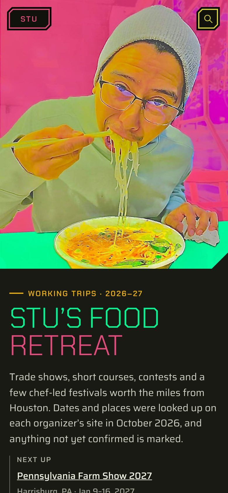
The fifth site
A sibling, not a recoloring.
The fifth site is a trade-event planner for a friend who runs a small catering business. I asked for new colors, fonts and component styles on the same patterns, so it would read as family without looking like a copy.
A sibling to the design system in [the Milwaukee site] but not just a recoloring.
Kept
The hero band, section openers on colored bands, the map with a detail panel and the three token tiers.
Changed
Dark only, line-work actions and headlines, hairline frames with cut corners and two new typefaces.
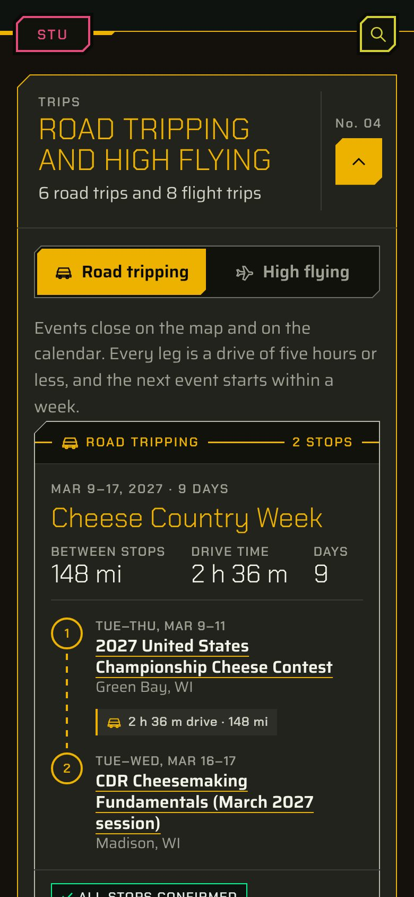
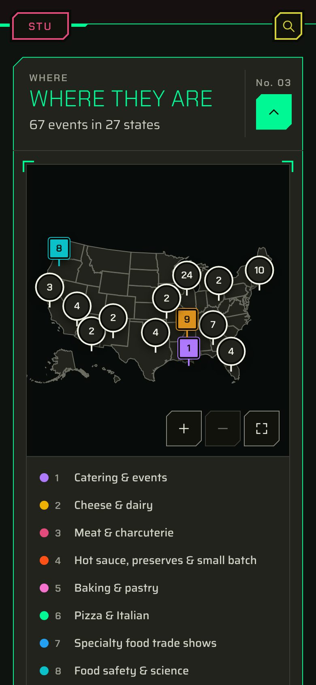
Where they are. The map with a detail panel. 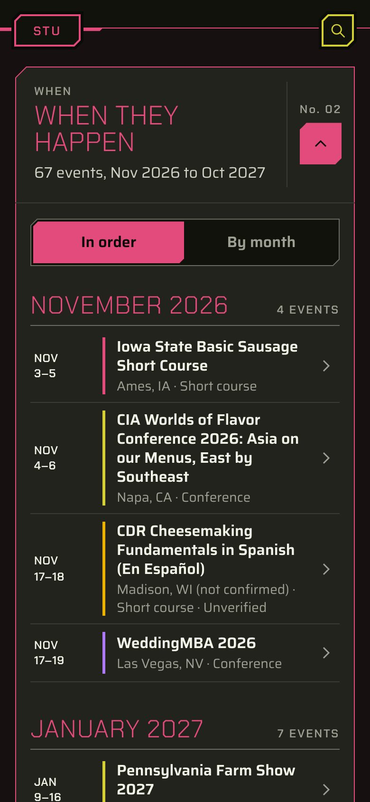
When they happen. In order or by month. 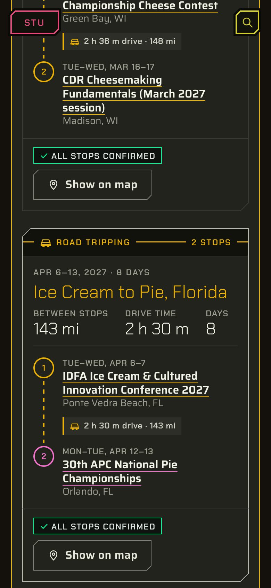
Road tripping and high flying. Events close on the map and on the calendar.
Palette
Six seeds from one photograph.
Sampled from one photograph. Each ramp keeps one saturated step and turns the rest into near-gray tints.
The photograph’s fade into the dark became a hard edge with a cut corner.
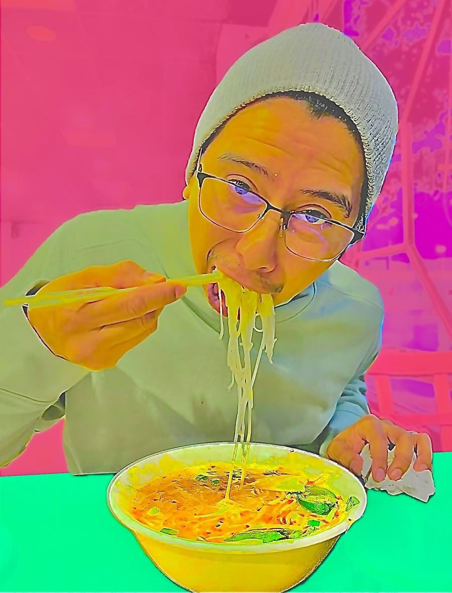
- Mint#00f894Map
- Pink#e34b7cCalendar
- Marigold#edb100Trips
- Chartreuse#d3cf34All events
- Magenta#d1308e
- Sage#191a14Ground
Checked
Each one wears its status.
- Every event was checked against the organizer’s own site before the build, and each one wears its status.
- A proposed filter was cut when the research could not back it.
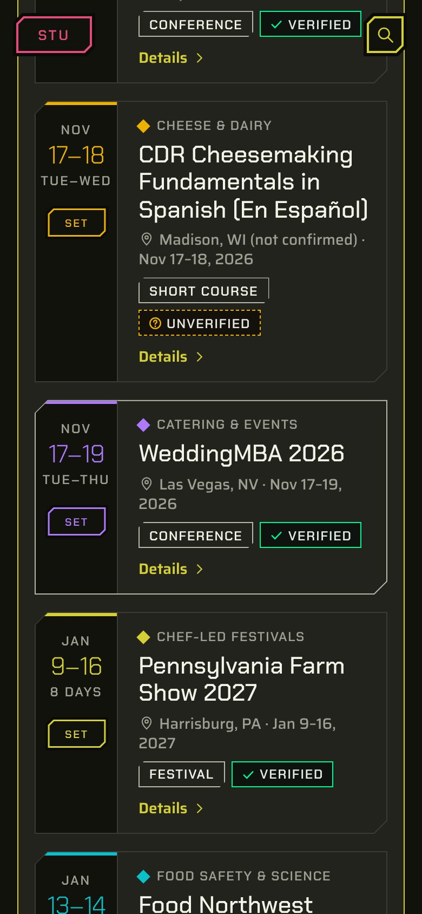
The trip sites
Same slots, new values.
Every trip site loads the same token file and layout stylesheets, byte for byte. A theme keeps the slot names and moves the values, so Spain puts Mediterranean blue in the teal slot and saffron in the gold slot.
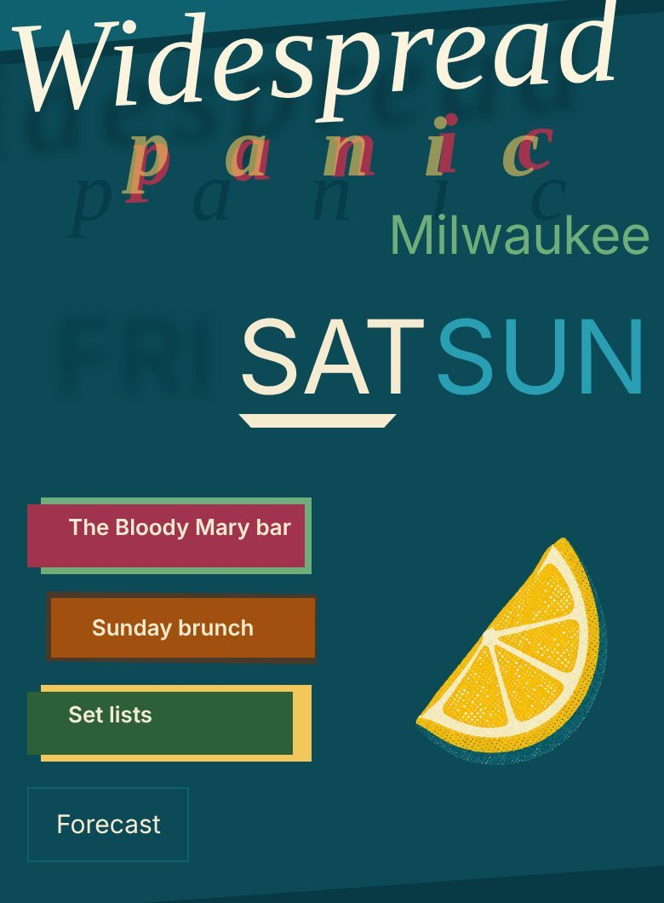
Milwaukee. A concert weekend. 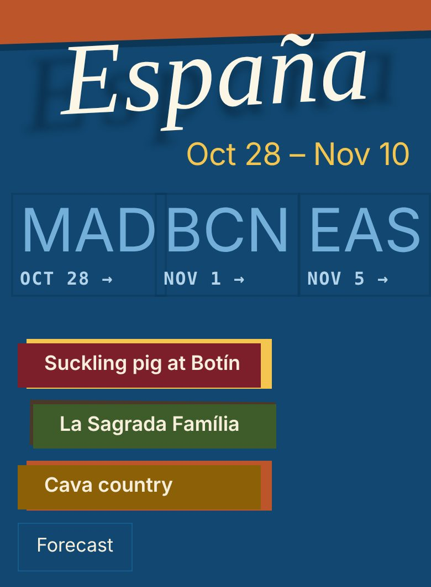
Spain. The first reuse. The trip is the timeline, one chapter per stop. 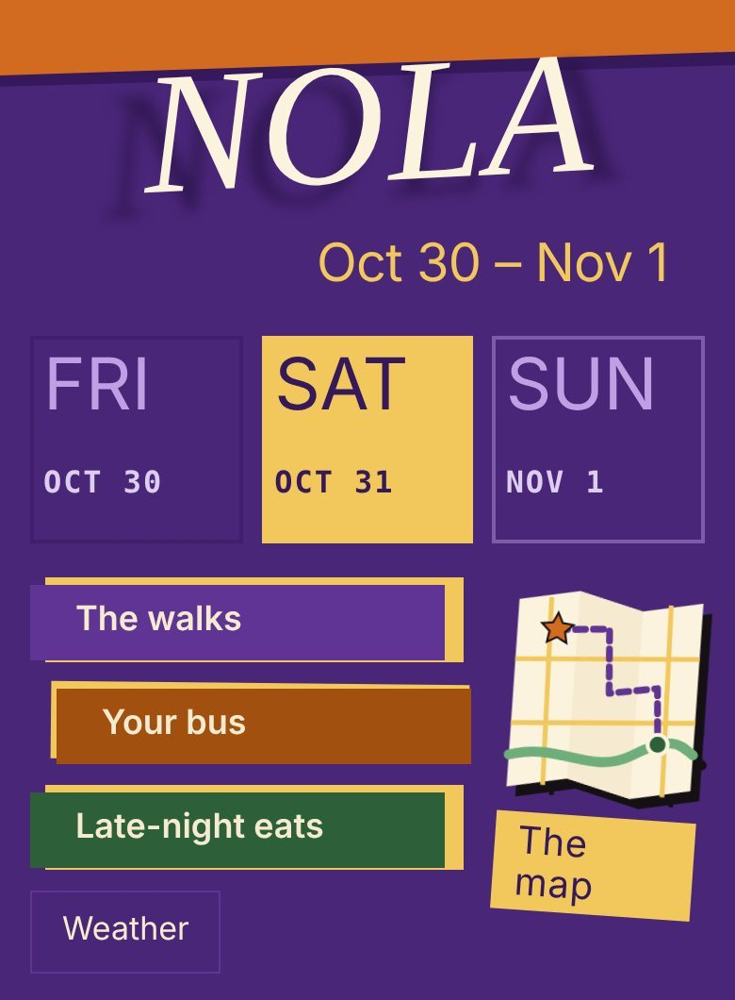
New Orleans. The Milwaukee theme with one slot moved to purple. 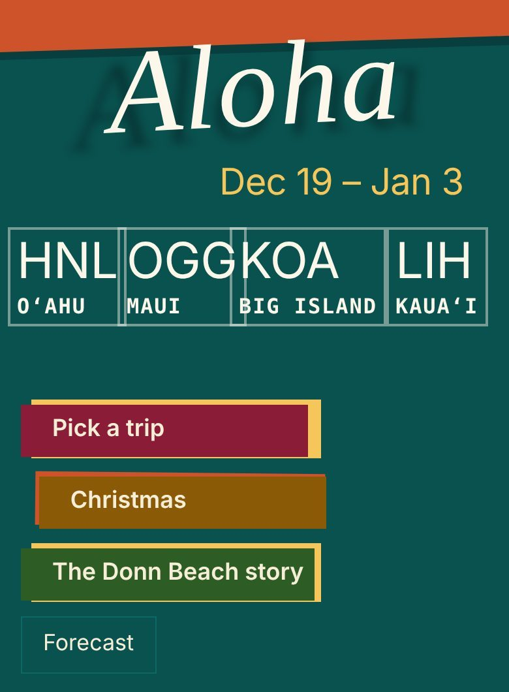
Hawaii. Built from the Spain site.
Four trips wearing one system. The theme file changes the colors of the same masthead.
The first site
The menu is her day.
The first site was built for one person’s concert weekend in Milwaukee, October 23 to 25, 2026. Its categories run in the order of her day: the Bloody Mary bar first, then breakfast, the street party, places to eat, the city, getting around, baseball, the shows and the after parties last.
Each category answers what she needs at that hour. The first street card led with road closures, so I moved the party to the top.
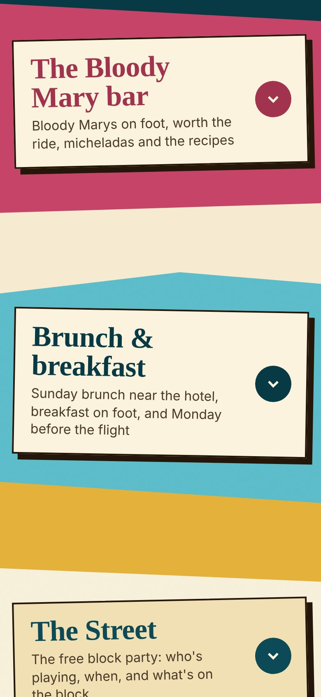
Content
Data files, sourced and refreshed.
- Content lives in data files, never in the page.
- Research agents write one JSON file per topic, with a source on every fact.
- On game days, a scheduled task posts the lineups and the final score as notes.
- New Orleans rechecked restaurant hours on official sites on the day of the first show.
The agents bring speed and a source for every hour, price and address. I decide what each person sees first, and my own note stays pinned above the automatic ones.
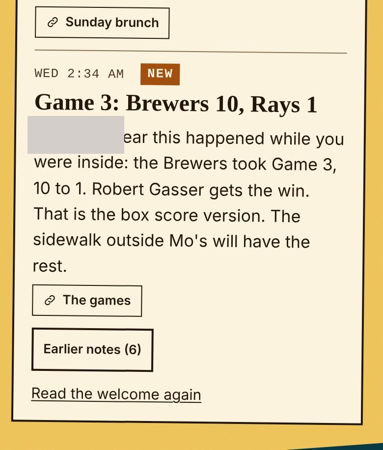
The gate
Two passes and a revision.
If your design passes two reviews, you do a revision, and the next review it passes, you can put it live.
Separate UX and design reviews checked each Milwaukee build, including phone widths of 320 and 390 pixels. The design passed two rounds, got its revision and passed the next. The UX review failed twelve rounds, first on contrast, text size and layout, then on keyboard focus, before it passed. The release went live that evening.
3.2:1 New badge contrast the review caught
4.77:1 The same badge on a darker orange, as shipped